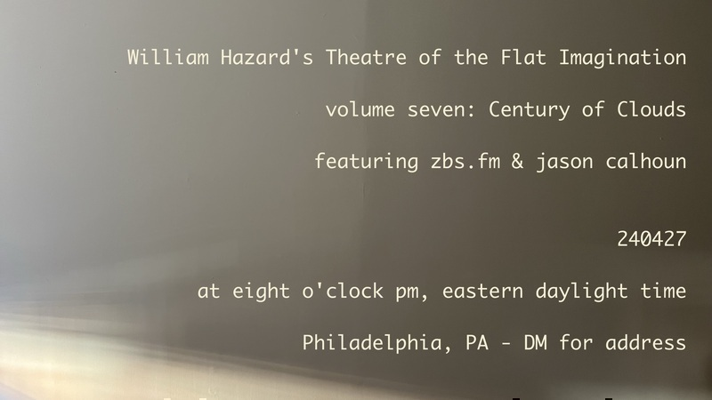

Theatre of the Flat Imagination, volume seven: Century of Clouds† will occur at eight o'clock pm, eastern daylight time, on April 27th, 2024 and will feature performances by zbs.fm & jason calhoun. If you'd like to attend this event, please get in touch with me by email, and I'll send you the address.
†Century of Clouds is the title of a book by Bruce Boone, originally published in 1980, by Hoddypoll Press, and reissued in 2009, by Nightboat Books
williamthazard [at] pm.me